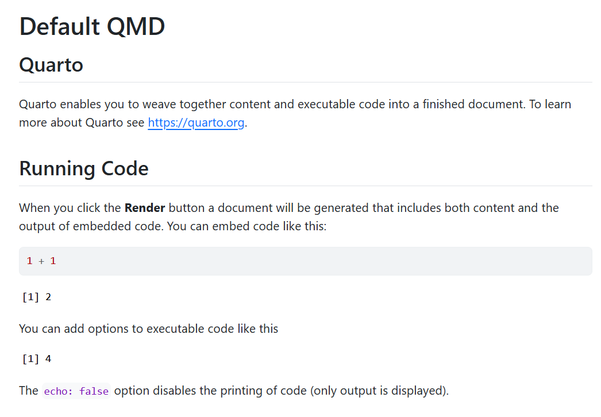

A recent collaboration of ours, led by Dr Melissa Licari of The Kids, involved producing a summary report detailing the challenges faced by individuals (and the families that care for them) living with Tourette Syndrome (TS) and other tic disorders. The full report can be found here.
Figure 1: Report cover
The report presented the analysis of a national survey undertaken in 2023/2024. The data analysis and preparation of figures for publication was undertaken by the Biostatistics team at The Kids.
To support production of the final publication there was considerable behind-the-scenes work, including resolving various challenges common to a large-scale project like this, where there are many variables and outcomes of interest. For example:
Survey coverage of 7 impact domains, each comprised of existing validated questionnaires as well as bespoke questions with a variety of response types (e.g. multiple choice, radio buttons, free-text fields)
Synthesis of data from 3 different distinct surveys (adults with tics, parents of children with tics, carers of adults with tics) that had a large overlap in terms of item/theme content but not necessarily identically matched response choices
Only partial survey completion by many respondents
Ultimately, the collaborators required the preparation of high-quality PDF output that met the needs of the report production team whilst conforming to The Kids style guidelines.
With a target endpoint that was rather different to the journal articles we Biostatisticians are typically preparing output for. Our experience with this TS collaboration prompted us to share our approach to tackling larger-scale projects like this, documenting elements of the processes followed in the hope they provide some insight to others (or ourselves in the future)!
While this post leans heavily into the use of our package, the outlined principles and insights should have much broader appeal.
Project design
The reproducible code-based capabilities of R for producing a suite of output, readily integrated into the RStudio environment, provided the ideal platform for us to compile a comprehensive document of data summaries, tabulations, and graphs from which the authors of the report could draw the key results for inclusion in the report destined for public dissemination.
Furthermore, the theming and formatting features of our in-house thekidsbiostats package proved to be a particularly useful asset in preparation of the publication-ready output conforming to The Kids style guide.
In line with the current practice of our team, features of our general project design include:
Overall project organisation being that of a self-contained R project with accompanying sub-directories. (See thekidsbiostats::create_project() for the template).
Given the scale of the TS project, generation of tables and figures was further blocked into 9 different files, corresponding to the distinct survey sections (background information, 7 impact domains, looking to the future) across the three distinct surveys (listed earlier). This enabled the code and output to be run, and checked, in manageable chunks, before the resulting tables and plots were reunited into single output file!
Use of sub-directories in the project organisation is illustrated by Figure 2.
Figure 2: Directory/subdirectory setup
The main output generating files are Quarto documents (with the .qmd extension), which supersedes the previous framework withing RStudio - R Markdown (.Rmd). Quarto documents have more flexibility and functionality, but still retain the header-text-code structure and simplicity of the markdown syntax. (See a useful reference here.)
For those unfamiliar with Quarto, note that documents can be written and rendered from either a visual view or a source view. The visual view aims to show certain elements (e.g. headers, code chunks, bold/italics) formatted as they will appear in the rendered document. Experienced users, or those more comfortable with coding, may prefer the source view, which gives more direct control and access to the customising of the formatting.
Figure 3: Visual screen of the default new QMD file
Figure 4: Source screen of the default new QMD file

Figure 5: HTML report
Figure 5 shows the HTML report produced by rendering the default QMD file
Robustness and reproducibility
Why a reproducible framework?
It is inevitable that there will be considerable data pre-processing required prior to undertaking any analysis and results generation. This is often the greatest challenge we find with a project! And it is inevitable that there will be minor tweaks and changes along the way.
Important
It is therefore essential that sound data management practices are thought out and maintained from the outset.
When pre-processing data:
Never overwrite the original raw data,
Always double-check merging of different data sets is accomplished correctly,
Check consistency of data entry/coding for the same variable sourced from different data sets,
Utilise a data dictionary, and ensure it is noted how missing values are coded,
Ensure newly created (exported) data sets are dated,
Scrutinize the final data set for anomalies prior to adopting it for analysis.
Furthermore, we find the following features of an appropriate project design and ensuing workflow help ensure that the end product of the data analysis is robust and reproducible:
Utilisation of a project template with organised sub-directories (see thekidsbiostats::create_project()),
Routine ongoing checks that code as written produces the intended results when executed,
Use of a document template for report writing that includes a run date in the header and session info at the end (see thekidsbiostats::create_template(), which creates .qmd files such as those seen above),
Inherent Quarto document features: Self-containment of the run environment, with other inputs called explicitly; auto-save with each render; text interspersed with result-producing code.
Streamlining and theming
Coding can be streamlined by adoption of time-saving techniques:
Setting of document-wide formatting, execution and style parameters in the document header,
For example, extra lines of code in the document YAML headers to facilitate numbering (and referencing) of figure and table captions,
Further refinement and definition can be accomplished by utilisation of a .css file (note: the reference to the styles.css file in the document header is required if creating a new document using the Quarto template in thekidsbiostats package),
Figure 6: Example Quarto document header
Document-wide styling can be defined in the Quarto header as in Figure 6.
Figure 7: Some example .css code
Familiarisation with short-cut keys and code (e.g. see this useful bookdown reference),
Judicious use of bespoke functions to reduce repetitive coding eg in generation of tables and plots,
This can minimise errors that easily creep in when reliant on cut-and-pastes or manual coding of repeated tasks; before functions require appropriate testing!
Professionalism in the overall presentation can be easily enhanced by the consistent formatting and theming of output. This can also be embedded into function calls. Note that loading of the thekidsbiostats package enables the easy incorporation of the Barlow font and the The Kid’s colour palette, as specified in the brand style toolkit.
Tip
This functionality can easily be adapted by the user for other organisations, simply by directing the function(s) to a different font and/or colour palette.
Code
my_theme <-function(base_size =11, base_family ="Barlow",base_line_size = base_size/22, base_rect_size = base_size/22,scale_colour_type ="discrete", scale_fill_type ="discrete",colour_theme ="thekids", fill_theme ="thekids",rev_colour = F, rev_fill = F) { colour_function <-case_when( colour_theme =="thekids"~list(scale_color_thekids(palette ="primary", reverse = rev_colour)), colour_theme =="thekids_tint"~list(scale_color_thekids(palette ="tint50", reverse = rev_colour)), colour_theme =="thekids_grey"~list(scale_color_thekids(palette ="typography", reverse = T)), )[[1]] fill_function <-case_when( fill_theme =="thekids"~list(scale_fill_thekids(palette ="primary", reverse = rev_fill)), fill_theme =="thekids_tint"~list(scale_fill_thekids(palette ="tint50", reverse = rev_fill)), fill_theme =="thekids_grey"~list(scale_fill_thekids(palette ="typography", reverse = rev_fill)), )[[1]]list(theme_classic(base_family ="Barlow",base_size = base_size,base_line_size = base_line_size,base_rect_size = base_rect_size) +theme(panel.grid.minor =element_blank(),plot.title =element_text(size=rel(1.6)),axis.title=element_blank(),axis.text =element_text(size=rel(1.2),colour="black"),strip.text =element_text(size =rel(1.4), hjust =0,color="black",face=2 ),plot.background =element_rect(fill ="white", colour ="white"),strip.background =element_rect(fill ="white", colour =NA)), colour_function, fill_function )}# Function to consistently present plots of the same type, with data having a column of rating levels (defined to be a factor) and the proportions to be plotteddo.RatingPlot <-function(Rdat, p.title){return(ggplot(Rdat, aes(y = prop, x = Rating, fill = Rating)) +geom_col(linewidth =0.0)+scale_y_continuous(labels = scales::label_percent()) +labs(x ="", y ="",title =str_wrap(p.title, width =70)) +my_theme() +theme(legend.position ="none",plot.margin =margin(l =15, b =7.5),axis.text.x =element_text(angle =25, hjust =1, size =rel(1.4), color ="black") ) )}
Figures for publication
At the pointy end of the TS collaboration, we were tasked with generating (in a publication-ready format) those figures which the co-authors had chosen to be included in the final public-facing summary report. This required close consultation with the production team to ensure that the images produced, as PDF files, matched the production specification, adhering to the colour and font formatting (and embedding) as intended.
After the exploration of several options, we settled on the cairo_pdf function from the grDevices package in the System Library, due to of its superior consistency and clarity of output.
Code
# Code for generating a pdf output file load("data/Diagnosis.Rdata") # Loads plot.diagProf, a previously constructed ggplot, into the document run environmentcairo_pdf("examples/diagProf_cairo_pdf.pdf", family ="Barlow", height =3.5, width =9)plot.diagProfdev.off()
Regular HTML report output of a ggplot generated figure.
Figure 8: Exported PDF reproduction of the above figure generated by cairo_pdf
The PDF as generated by cairo_pdf(...,family="Barlow) provides a close likeness to the HTML output of ?@fig-diagProf_html, and was the preferred format of the production team.
Closing comments
Ongoing Challenges
There is always a balance of time investment and where to draw the line when attempting to further one’s technical prowess, particularly with R coding!
While often times a quick google or ChatGPT will help you find a solution relatively quickly, we found here that there seemed to be a lack of clear (complete) online guidance around PDF exporting options and resolving output discrepancies (embedding issues, default fonts dependency on machine/OS, CMYK for printing vs HTML colour) - fodder for another post!
Acknowledgements
Thanks to Wes Billingham, Zac Dempsey, and Robin Cook for providing feedback on and reviewing this post.